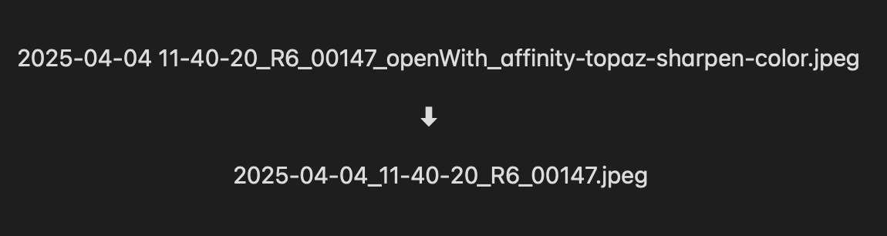
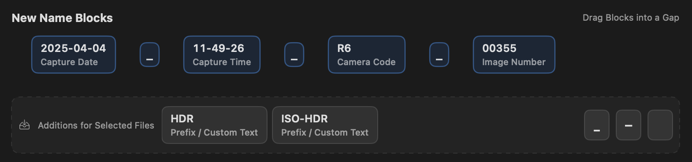
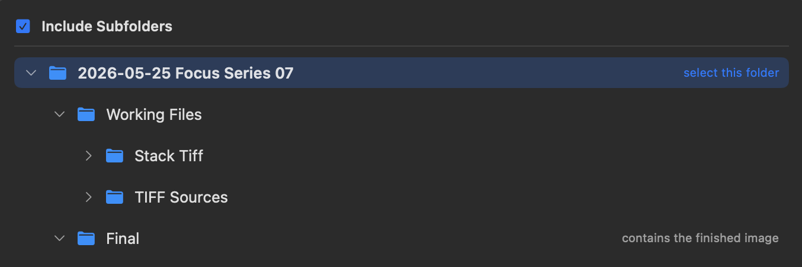

Part 1 · Introduction
1.1 About PhotoCaptureTime
PhotoCaptureTime gives large photo collections consistent names based on capture date, capture time, camera, and image number. The preview shows the current and proposed name side by side for every file. Files on disk are renamed only after you confirm.
The Distinctive Approach
The app deliberately works differently from Find and Replace. You choose the number block in the existing name that should be preserved as the image number. PhotoCaptureTime then rebuilds the date, time, camera code, separators, and custom text.

Note: Irregular prefixes, editing suffixes, or old date formats do not have to be replaced individually. Only the number block you want to preserve matters.
1.2 Quick Start
- Add image files or a folder.
- Select a representative file in a camera group.
- Set the image number under Detected Number Blocks.
- Arrange the New Name Blocks.
- Review the names and status symbols.
- Choose the scope and confirm Rename Files.
Part 2 · Preparing Files
2.1 Loading Files and Folders
Add Files or Folder lets you load individual images, multiple files, or entire folders. Include Subfolders extends the search to folders below the selected folder. Analysis runs in the background, and the interface remains usable while it runs.
The source list on the left shows the loaded folders and file counts. A source can be removed using its context menu. Clear List removes only the entries from PhotoCaptureTime; it does not delete image files.
2.2 Camera Groups and Selection
PhotoCaptureTime reads the camera model from the metadata and groups matching files. The arrow expands or collapses a group. The Code field sets the short camera identifier in the new filename, such as R6 or IP15.
Click to select a file. Command-click adds or removes individual files, and Shift-click selects a continuous range. The button on the right side of the group header selects the entire group or clears its selection.
If a camera model is missing or was detected incorrectly, click the active camera block under New Name Blocks. You can edit the model and code there.
2.3 Searching and Filtering
The search field filters the current filename. The status menu filters by Review, Ready, Already Correct, or Conflict Resolved. Both filters work together.
Conflict Resolved shows the complete conflict group: the file with the original target name and every related file that received a numbered suffix.
Part 3 · Composing Names
3.1 Keeping Number Blocks
PhotoCaptureTime splits the selected file's name into number blocks and classifies recognizable components such as date, time, and camera. Use a block's menu to decide what should be preserved.
| Selection | Effect |
|---|---|
| Keep as Primary Number | This block becomes the primary image number for the camera group. |
| Keep as Additional Required Block | Multiple numeric parts together form the identifier. |
| Keep as Optional | The part is preserved, but it may be absent from other files. |
| Entire Block | For mixed identifiers, associated letters are preserved as well. |
Important: Choose a file with a representative name structure. The Review filter will then show the exceptions.
3.2 New Name Blocks
The upper row shows the future name structure. Drag blocks to a visible insertion point or onto the left or right half of an existing block. The new block is placed before or after it accordingly.

Drag an active block into Additions for Selected Files to return it from the target name. This tray also contains text blocks as well as underscore, hyphen, and space separators.
Double-clicking a separator template applies it to every gap. Dragging places it at only one position.
3.3 Editing Blocks
Click an active block to edit it. Several formats are available for date and time. The camera block lets you adjust the model and code. Custom text can be used as a prefix, label, or freely chosen name component.
Custom text applies to the current file selection. This lets you add labels such as HDR or ISO-HDR only to selected images without changing the rest of the structure.
3.4 Finished Focus Images
The label for a finished focus-composited image appears only when PhotoCaptureTime can derive the series number from the currently selected folder and the finished image is included in the visible file list.
Required Folder Selection

- Add the parent folder with its complete structure.
- Select the parent folder on the left - not the Final subfolder.
- Enable Include Subfolders. This also makes files from Working Files and Final visible.
- The selected folder name must contain Fokusreihe or Fokusstapel and a number, for example 2026-05-25 Fokusreihe 07.
- Select the finished composite image and click Assign Stack07_Final.
Important: If you select the Final subfolder directly, PhotoCaptureTime can no longer read the series number from the selected folder name. A parent folder named only 2026-05-25 is currently not sufficient for automatic labeling either.
After assignment, Stack07_Final is used instead of the regular image number. The assignment applies only to the selected files and can be cleared with Remove Assignment.
Part 4 · Reviewing and Renaming
4.1 Status Symbols
| Symbol/color | Status | Meaning |
|---|---|---|
| → Blue | Ready to Rename | The new name differs from the current one. |
| ✓ Green | Already Named Correctly | No change is required. |
| ! Orange | Review or Complete Details | A required detail is incomplete or ambiguous. |
| × Red | Image Number Not Found | The number structure does not match this file. |
| ▣ Blue | Name Conflict Resolved Automatically | The target name received an _1, _2, and so on suffix. |
This overview also appears on the right below the metadata. The detail view additionally shows the proposed name, camera model, code, and capture time of the selected file.
4.2 Name Conflicts
If files in the same folder would receive the same target name, PhotoCaptureTime orders them using available modification and file dates. One file keeps the base name; the others receive _1, _2, and so on.
The blue symbol marks only names with an added suffix. The filter still shows all conflict partners together.
Note: Use the Conflict Resolved filter to review all involved files together.
4.3 Renaming and Undo
At the bottom right, choose the scope: Selected Files, Current Camera Group, or All Ready Files. PhotoCaptureTime first shows a summary with the number of files, skipped files, and conflicts.
Undo Last Rename is available after an operation. If possible, use it immediately before files are moved or renamed again outside the app.
Part 5 · Help and Reference
5.1 Metadata and Formats
PhotoCaptureTime prefers the original EXIF capture date. If it is missing, the app checks other embedded dates and finally file-system dates. The metadata view shows the available values.
Supported Formats
- Standard images: JPEG, HEIC, HEIF, TIFF, and PNG.
- Camera RAW: 3FR, ARW, CR2, CR3, CRW, DCR, DNG, ERF, FFF, GPR, IIQ, K25, KDC, MEF, MOS, MRW, NEF, NRW, ORF, ORI, PEF, RAF, RAW, RW2, RWL, SR2, SRF, SRW, and X3F.
Important: Which previews and embedded metadata can be read also depends on whether the installed macOS version supports the specific camera model and its RAW variant. If EXIF data is missing, PhotoCaptureTime can still use file-system dates and existing number blocks.
5.2 Appearance and Privacy
Under PhotoCaptureTime → Settings, you can change the neutral gray level and accent color. This affects only the appearance, not filenames.
Privacy
Analysis and renaming take place locally on your Mac. Images and metadata are not sent to an online service.
5.3 Frequently Asked Questions
Why are date parts shown as number blocks?
The app shows every number in the old name. The label helps classify it; only your selection determines which image number is preserved.
Why is a file marked in orange?
Orange means review or complete details. Names that already match carry a green checkmark.
Why is a numbered suffix added?
Otherwise, multiple files would receive the same target name. The suffix prevents overwriting.
Why is a file missing from the filter?
Also check the search field. The search term and status filter apply at the same time.
Where can I open this manual?
Choose Help → PhotoCaptureTime Help or press Command-?.
5.4 Copyright and Trademarks
© 2026 Markus Ball. All rights reserved.
PhotoCaptureTime and this user manual may not be reproduced, modified, or redistributed without the prior permission of the copyright holder, except where expressly permitted by law.
Apple, macOS, iPhone, HEIC, and other Apple product names mentioned are trademarks of Apple Inc. Other product and company names mentioned may be trademarks of their respective owners.